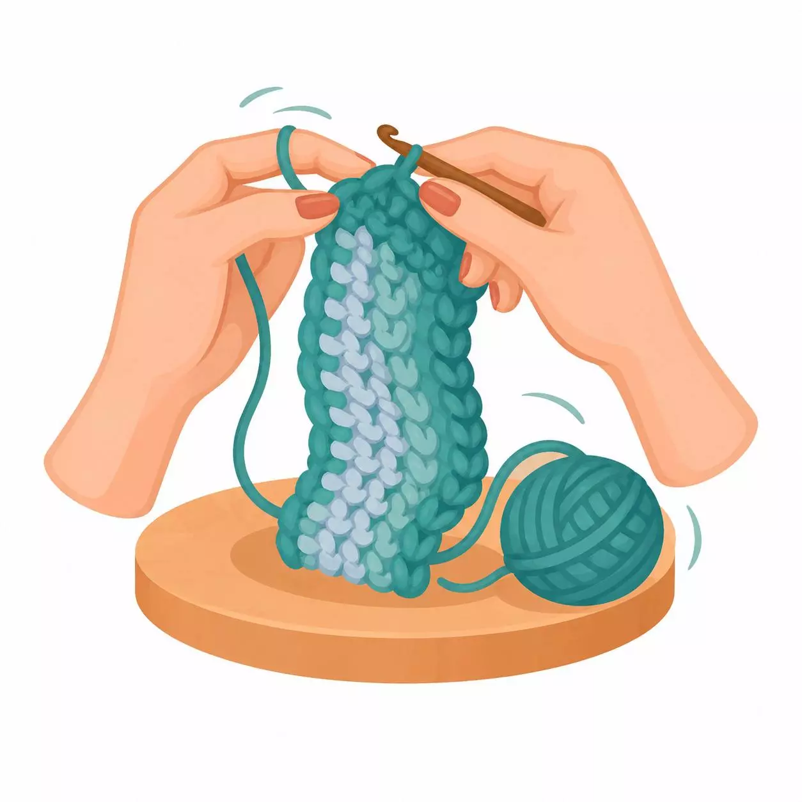

أساسيات الكوروشية

حرفة يدوية إبداعية تعتمد على تشبيك الخيوط باستخدام إبرة خاصة ذات خطاف لإنشاء أنسجة وغرز متنوعة
الأدوات
- إبرة كوروشية
- خيوط إكريليك أو قطن
مميزات
- يمكن للمبتدئين تعلم أساسياته بسرعة
- تنفيذ تصاميم وأشكال غير محدودة
- علاج مهدئ للأعصاب يقلل من التوتر والقلق، وينشط الذاكرة
|
رقم الكورس
|
هدف الكورس
|
رابط الكورس |
انجز
|
|
الأول
|
إتقان أنواع السلاسل
|
|
|